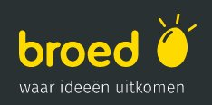
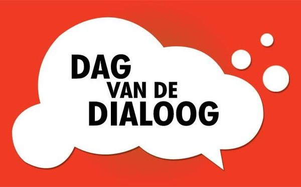
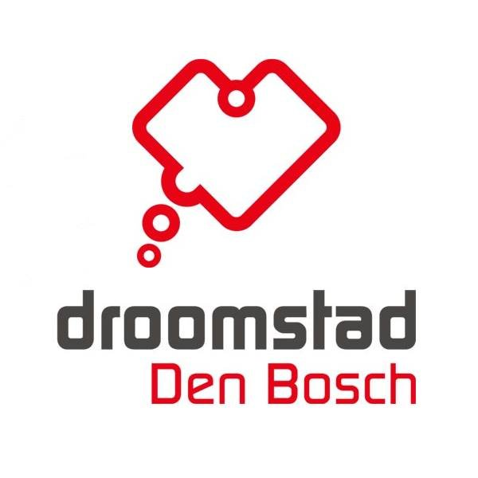
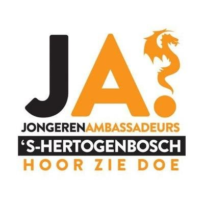
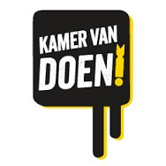
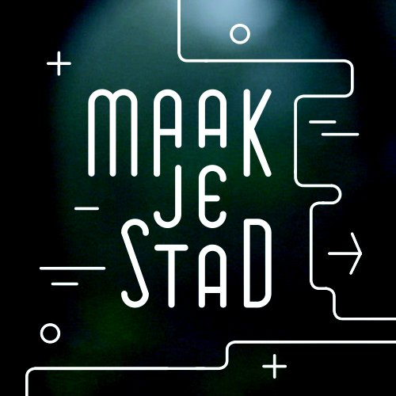
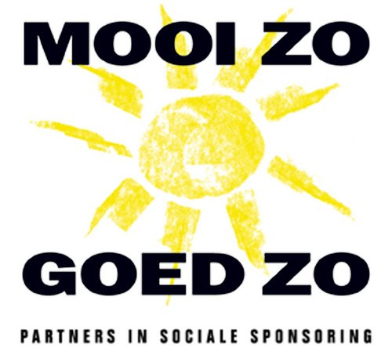
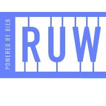
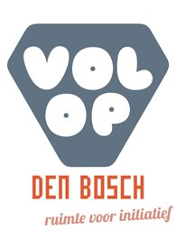

|  |
BroedWerk samen met sociale ondernemers, experts en andere betrokken Bosschenaren aan jouw nieuwe maatschappelijke initiatief of dat van een ander. Samen Broeden we op een betere toekomst! |
|  |
Dag van de DialoogOnder de vlag van “Nederland in dialoog” wordt in ruim 50 plaatsen in Nederland jaarlijks de Dag van de Dialoog georganiseerd. De dialoog is bij uitstek geschikt om mensen met verschillende achtergronden met elkaar in contact te brengen om elkaar te leren kennen. De dialoogtafels staan verspreid over heel ’s-Hertogenbosch. De dialooggesprekken duren 2-3 uur en er wordt een maaltijd geserveerd tijdens het gesprek. Onder leiding van een getrainde gespreksleider wordt het gesprek gevoerd rond het thema “De toekomst van stad…” |
|  |
DroomstadDroomstad biedt een online plek waar ideeën en Dromen voor iedereen te zien zijn. Een online plek waar je in één oogopslag kunt zien welke Dromen voor welke locaties in de stad zich op dat moment afspelen. Droomstad Den Bosch is een plek waar je de realisatie van jouw Dromen voor locaties in de stad kan versnellen en waar je kan bijdragen aan de realisatie van ideeën en Dromen van anderen. Bouw mee aan onze gezamenlijke Droomstad! |
|  |
JongerenambassadeursJongerenambassadeurs zijn jonge Bosschenaren die Den Bosch mooier en leuker willen maken. Iedere week gaan ze aan de slag met allerlei thema's die jongeren en de gemeente belangrijk vinden. Deze jongeren geven gevraagd en ongevraagd advies aan de gemeente en jagen meer betrokkenheid van jongeren aan. |
|  |
Kamer van DoenHeb jij ook een waanzinnig idee om jouw buurt socialer te maken? Wil je weten hoe jij kunt gaan DOEN vanuit een duurzaam en betaalbaar (verdien)model? Ben je al aan de slag en heb je nog behoefte aan gratis kennis of advies om verder te groeien? Loop je tegen hokjes aan waardoor jouw initiatief niet verder kan groeien en bloeien? Maakt je initiatief maatschappelijke impact in gemeente 's-Hertogenbosch? Klop dan aan bij de Kamer van DOEN! |
|  |
Maak je StadSteeds meer Bosschenaren stappen zelf in de actie om hun stad mooier, socialer en duurzamer te maken. Om deze beweging zichtbaar te maken heeft een team van filmmakers uit de stad het initiatief genomen om een documentaire te maken. Deze toont een dwarsdoorsnede van de verschillende soorten maatschappelijke initiatieven die worden genomen door verschilmakers uit alle hoeken van de stad. In zes inhoudelijk heel verschillende portretten komen deze betrokken bewoners aan het woord en vertellen ze over hun droom, drijfveer en aanpak. Het zijn voorbeelden van mensen die de stad maken. Laat je inspireren! |
|  |
Mooi Zo Goed ZoMooi zo Goed zo koppelt de energie en creativiteit van bewoners en vrijwilligers van 's-Hertogenbosch aan de expertise en capaciteiten van bedrijven en instellingen. Samen bouwen we aan de toekomst! |
|  |
RUWRUW is het nieuwe podium van de Bieb voor discussie en praktische initiatieven rond kennis, maatschappelijke, sociale en culturele innovatie. De samenleving is nog niet af en kan beter. Daarom organiseert RUW het gesprek over de toekomst. Middels debat, dialoog en praktische initiatieven onderzoekt RUW met ons hoe onze samenleving beter kan. Zoek je nog een ruimte om met je club of netwerk samen te komen voor de toekomst van jullie Den Bosch? Dan ben je van harte welkom bij RUW. |
|  |
Volop Den BoschVOLOP Den Bosch pakt leegstand aan door deze tijdelijk beschikbare ruimte in te zetten voor goede initiatieven. Deze krijgen letterlijk de ruimte zich te presenteren en door te ontwikkelen naar wellicht een structureel karakter. Heb jij een goed initiatief maar niet de middelen om ruimte tot je beschikking te krijgen, neem dan contact met ons op. Iedereen krijgt bij VOLOP Den Bosch een intake gesprek waarin we afstemmen wat we voor elkaar kunnen betekenen. |

KIJK EN VERGELIJK
Op dit moment gebeurt er al veel meer in onze mooie stad. Verschillende initiatieven bieden al een platform voor meedenken over en meebouwen aan de toekomst. Misschien kun je met jouw netwerk hierop aansluiten?